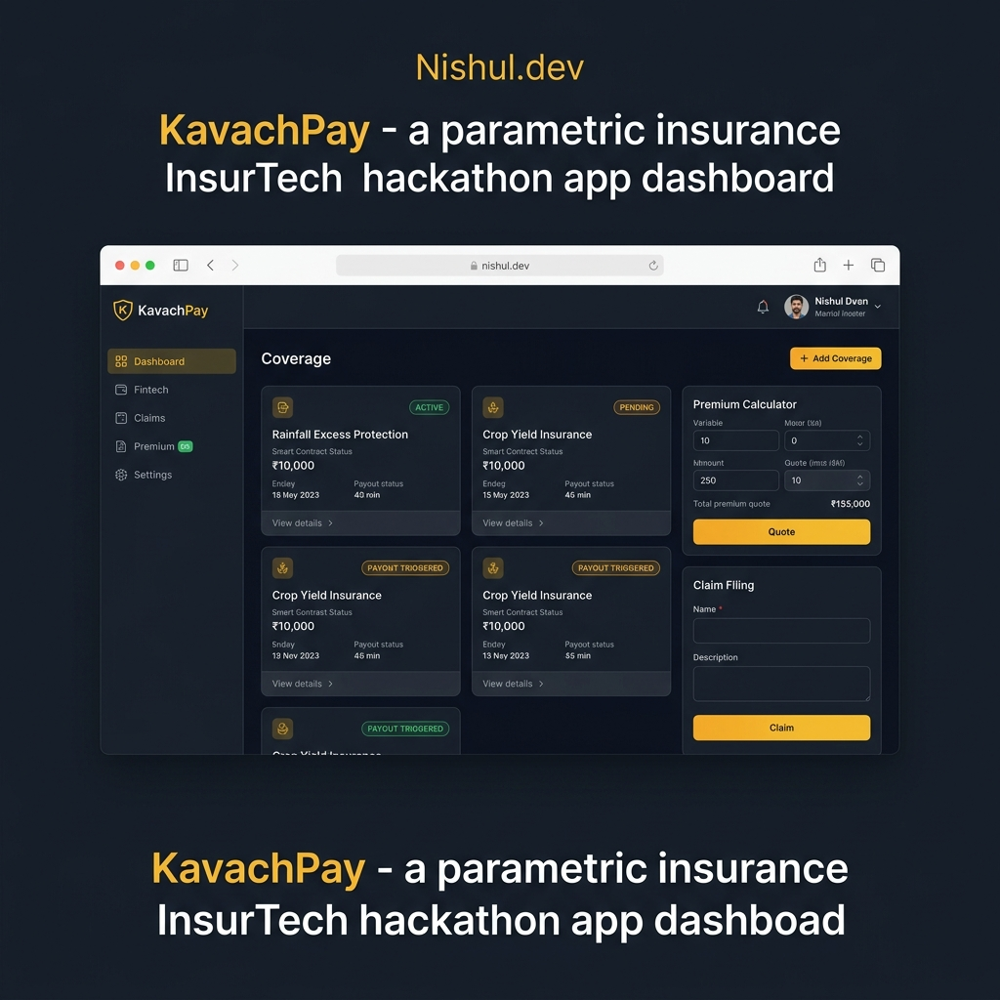

The winning project for the Guidewire DEVTrails University Hackathon (Soar Phase). AI-driven parametric insurance platform specifically designed for India's 15 million gig delivery workers disrupted by extreme weather.

India's ~15 million gig delivery workers face massive income vulnerability. Heavy rainfall, extreme heat, floods, or curfews can lead to days of zero earnings. Traditional insurance is too slow, paper-heavy, and unsuited for micro-disruptions.
Existing parametric insurance solutions rely heavily on GPS location. This creates a fatal flaw: GPS spoofing. A coordinated Telegram group could spoof being in a flood zone and drain the insurance liquidity pool in hours. When fraud kills the platform, honest workers lose coverage.
I built KavachPay during the Guidewire DEVTrails Hackathon. It is a behavioral parametric insurance platform powered by the Work-Proof Protocol (WPP).
The system cross-references these behavioral fingerprints with authoritative satellite data (IMD) to auto-trigger claims, paying out directly to UPI via Razorpay without the worker lifting a finger.
Challenge: Defeating GPS Spoofing Syndicates
The primary hurdle in parametric insurance is that bad actors can coordinate via Telegram to fake their locations and simulate natural disasters at scale. Relying on simple geofencing was not viable.
Solution: I shifted the defense surface area to server-side IP geolocation and browser interaction patterns. Since attackers have to actually interface with our browser client, their network provenance (ISP) and behavioral anomalies betray them even if their GPS coordinates look perfect.
Challenge: Ensuring Honest Workers Get Paid Promptly
Overly aggressive anti-fraud systems can create high false-positive rates, blocking genuine workers who might just be using a new route or phone.
Solution: I implemented a partial advance payout system. While claims with moderate fraud scores go under review, 40% of the claim amount is dispensed immediately, combined with a transparent SMS communication flow.
This project successfully secured qualification into Phase 3 (Soar Phase) of the Guidewire DEVTrails Hackathon. It addresses a real-world multi-million dollar vulnerability in parametric insurance models while protecting the most financially vulnerable workers in the gig economy.